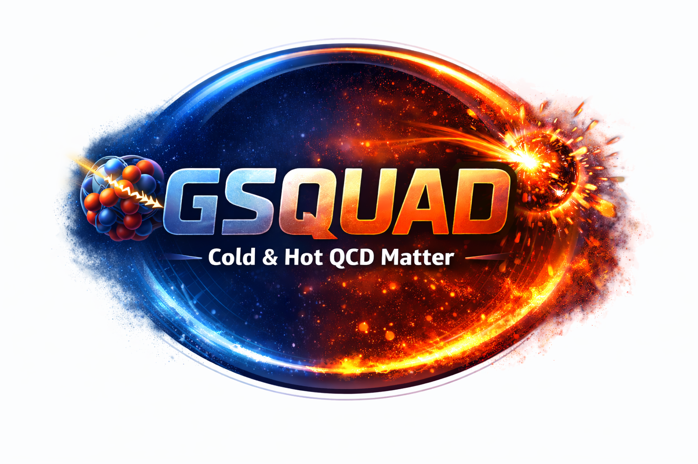
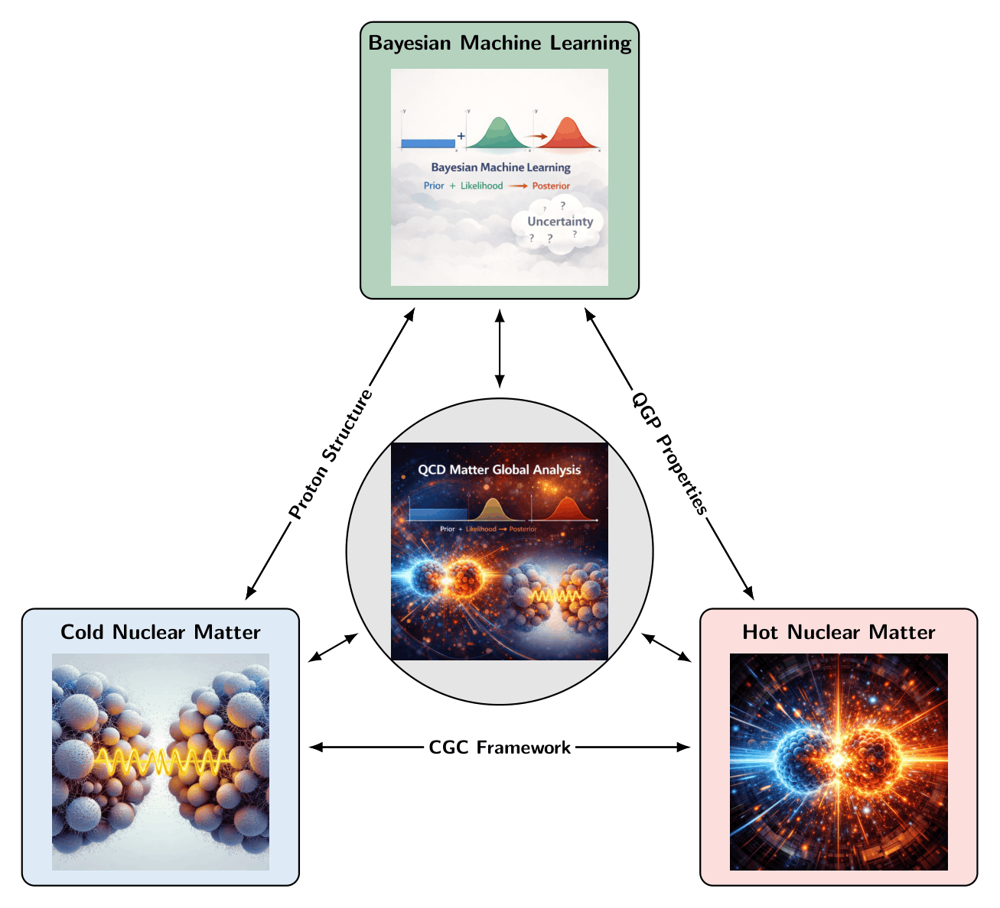

Gluon Saturation and QGP Unified Analysis of Data
Marie Skłodowska-Curie Actions Postdoctoral Fellowship September 2026 – August 2028 Host Organization: University of Jyväskylä, FinlandA project connecting the structure of nucleons with the properties of the quark–gluon plasma through global Bayesian inference.
GSQUAD unifies the study of cold and hot QCD matter by integrating deep inelastic scattering, ultra-peripheral collision, and heavy-ion collision data into a single Bayesian framework.
Leveraging the Color Glass Condensate effective theory together with JIMWLK evolution, the project will simultaneously constrain nucleon structure, small-x gluon dynamics, and transport properties of the quark–gluon plasma.
Novel Bayesian reweighting techniques will consistently propagate uncertainties across observables, enabling a direct connection between nuclear structure and QGP properties.
GSQUAD will further develop an open-source computational framework for reproducible simulations and predictions relevant for current LHC measurements and the future Electron-Ion Collider.

Overview of the GSQUAD framework connecting cold and hot QCD observables through a unified Bayesian analysis.
GSQUAD is funded by the European Union through a Marie Skłodowska-Curie Actions (MSCA) Postdoctoral Fellowship.
Funded by the European Union. Views and opinions expressed are however those of the author(s) only and do not necessarily reflect those of the European Union or the European Research Executive Agency (REA). Neither the European Union nor the granting authority can be held responsible for them.